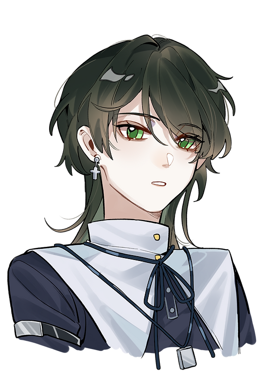

夢向設定
組合名稱：克勞德 × 貝利亞
姐弟關係變質啦！
CloudBerry雲莓
注意事項：
克勞德的表情跟情緒起伏肢體動作不要太浮誇
克勞德的表情跟情緒起伏肢體動作不要太浮誇
世界觀介紹
黑化的英雄、去世的親人、征戰的隊友、破碎的他。
| 貝利亞‧凱內爾姆 | 克勞德‧史特來夫 | |
|---|---|---|
|  |
| 姓名 | 貝利亞‧凱內爾姆 | 克勞德‧史特來夫 |
| 性別 | 女 | 男 |
| 生日 | 07.15 | 08.11 |
| 年齡 | 28 | 23 |
| 身高／體重 | 154.3／？ | 173／？ |
| 國籍／種族 | 黑戶／人類 | 尼布爾海姆／人類（傑諾瓦） |
| 長相特徵 | 黑髮綠眼水母頭，矮子平胸男人婆。 平時不太注重外表，但如果在克勞德身邊會變得有點在意。 |
金髮刺刺頭髮型像巧可啵，眼睛是漂亮澄澈的藍色。 身高在同性別裡偏矮，但髮型又彌補了這一部份（？） |
| 職業 | 無業遊民 | 星球英雄 |
| 喜好／習慣 | 獨處、閱讀、欣賞美麗的事物（？） | |
| 學習／工作能力 | 普通 | 上等 |
| 生活能力 | 偏上 | 弱 |
貝利亞 - 詳細設定
❏ 外貌：
一般情況下是黑髮綠眼的矮子，在特殊地圖會變成黑髮黑眼。
❏ 個性：陽光開朗但容易內耗，面對克勞德的時候情緒起伏表情比較多還愛逗他，獨處的時候就隨便。
❏ 特點：意外的普通，沒有特殊能力武力也幾乎為零。
❏ 家庭：一般情況下沒爹沒媽沒朋友，特殊地圖有爹有媽有朋友。
❏ 其他：遊戲玩家被降為打擊掉進遊戲裡的設定，遊戲內綠眼+舉目無親，遊戲外黑眼+父母健在。
❏ 聲線參考：我自己
|
克勞德 - 詳細設定
❏ 外貌：
金色陸行鳥髮型藍色眼眸，平時沒什麼表情看起來酷酷的。
❏ 個性：小時候性格內向、沉默寡言，看上去氣質憂鬱，其實挺臭屁傲嬌。
❏ 特點：看起來冷漠，實際上挺脆弱，需要有人給他肯定。易害羞易自卑易破碎，害羞過頭或被欺負過頭會轉守為攻。
❏ 家庭：小時候父親去世，由母親獨自帶大。
❏ 其他：暫無。
❏ 聲線參考：櫻井孝宏／Cody Christian
|
|
貝利亞 - 個人主線劇情（左右聯動）
克勞德幼時／尼布爾海姆村／17-8歲左右 FFVII玩家，可以裝E的INTP人。 遊戲期間無意中落入遊戲世界，經歷劇情後重回現實。 這一切是莊周夢蝶亦或是蝶夢莊周……？
克勞德幼時／尼布爾海姆村／17-8歲左右
克勞德向她訴說了憧憬後，記憶的牆被打破了，那些遊戲故事的記憶斷斷續續的出現在腦子裡，有時是克勞德與村裡另一個漂亮女孩蒂法的互動，就連訴說憧憬也是在漂亮的星空下與蒂法交流，而不是……不是她。 在克勞德離開後沒多久也暫時離開了尼布爾海姆，但只在四周環行，從不遠離。
FF7 OG／未定／24歲左右
也許是有意的，貝利亞在雪崩一行人的行徑路上「偶遇」了克勞德，並發現他完全不記得自己，甚至連同與自己相處都充滿了戒備，同時克勞德與同行女孩子們的相處互動更為和諧，加上遊戲故事給她的既定印象，貝利亞認為克勞德「喜歡」蒂法或是艾莉絲，於是整個旅途中抑制了情緒，只沉默的像個旁觀者一樣跟隨。
FF7 OG／遺忘之都／24歲左右
賽菲羅斯想殺了艾莉絲，貝利亞不願克勞德難過，加上覺的反正自己的存在也已經不重要了，遂擋刀。 失去意識後回到現實世界。
FF7 AC後／無特定地點／克勞德23歲後
克勞德想盡辦法，終於讓貝利亞成功回到蓋亞，但貝利亞總覺得克勞德喜歡的人另有其人，花了很長時間才終於相信對方喜歡自己。 （文章未修正完畢暫無連結） |
克勞德 - 個人主線劇情（左右聯動）幼時／尼布爾海姆村／12-3歲左右
受傷時被貝利亞撿到後包紮送回家。
幼時／尼布爾海姆村／12-3歲左右
向周圍比較熟悉的人訴說自己的憧憬，想要成為像賽菲羅斯那樣強大的戰士、成為英雄
FF7核心危機／米德嘉／16歲左右
與英雄賽菲羅斯一同回到家鄉調查，但因為沒有像離開時說的那樣成為英勇的戰士（目前還是個小兵），所以在熟人面前均戴著頭盔隱藏身分。 賽菲羅斯得知「身世」後燒毀了村莊，也造成克勞德的母親克勞迪婭離世，克勞德背刺賽菲羅斯並用怪力將他甩下魔晄爐，同時自己也因為受傷過重昏迷。 昏迷後被帶走做人體實驗泡了四年的魔晄，被救出來後記憶混亂，不知道是命運的修正或是其他什麼，總之克勞德把貝利亞的存在完全遺忘了。
FF7 OG／遺忘之都／20歲左右
親眼看見貝利亞出來擋刀，強烈的情緒突然衝破了記憶的枷鎖，讓他回憶起了小時候。 ──「姐姐！」
FF7聖子降臨／邊緣城／23歲左右
主線中擊敗了賽菲羅斯，夢向內容也改變了劇情，艾莉絲並未身死，克勞德雖然離群索居卻也不像原作中那樣消沉，在艾莉絲的指引下，他花了許多時間在尋找異世界的消息。 而後在長時間無所得的低落情緒與星痕症候群的糟糕身體狀況下爆發擊敗了回歸的賽菲羅斯。 也許是星球的餽贈，克勞德成功穿越了次元，面對面跟貝利亞對談，並將還沒有說服自己敞開心扉的她帶回了蓋亞。 |
|
貝利亞 - 個人衣櫃 |
克勞德 - 個人衣櫃

|
互動關係表格（內含R18相關）
🔞 打炮相關
禁止的play
腦姦、眼孔姦、子宮脫垂、肛門脫垂
避免的用詞
騷、賤、母狗（牝犬可以） 不要愛心、奶子不可以晃出殘影、不行驚聲尖叫（過於誇張的那種）
|